End-to-End Breast Cancer Histopathology Classifier
A project to build a professional, end-to-end machine learning system—from raw data to a live, cloud-deployed application with a full CI/CD pipeline.
Project Overview

This project demonstrates a complete, end-to-end MLOps workflow for deploying a computer vision model as a scalable, public-facing inference service. The focus was on the operational lifecycle of a machine learning model: from experiment tracking and data versioning to containerization and automated deployment.
As illustrated in the high-level architecture diagram, the system is designed for full automation. A developer pushes code to GitHub and data/models via DVC. This triggers a GitHub Actions pipeline that builds a container, pushes it to Google's Artifact Registry, and deploys it as a live API on Cloud Run, which is then accessed by the end-user.
The chosen tech stack emphasizes robustness and efficiency. FastAPI provides a high-performance API layer, Docker ensures a consistent runtime environment, and Google Cloud Run offers a cost-effective, auto-scaling deployment target. This case study showcases the best practices for bringing an ML model from a research notebook to a reliable, production-ready application that delivers real-time predictions.
This automated approach stands in contrast to manual deployment methods, which are often slow, prone to human error, and difficult to reproduce. By codifying the entire process from data to deployment, the system gains immense value in terms of reliability and development velocity, treating the machine learning model as a true software product rather than a static research artifact.
Key Features & Technologies
Containerized & Scalable Deployment
The fine-tuned ResNet50V2 model was packaged with a FastAPI backend into a lightweight Docker container. This container was deployed to Google Cloud Run, a fully managed serverless platform. This architecture provides automatic scaling to handle variable traffic (from zero to thousands of requests), eliminates infrastructure management overhead, and ensures high availability without the need to provision or manage servers.
CI/CD for Zero-Downtime Updates
A complete CI/CD pipeline was established using GitHub Actions. As shown in the flowchart below, every push to the main branch automatically triggers the process to build a new Docker image, push it to the Google Artifact Registry, and deploy the new version to Cloud Run. This enables rapid, reliable, and zero-downtime updates to the production service, a cornerstone of modern DevOps practice.

100% Reproducible ML with DVC

A common challenge in ML is versioning large datasets and models, as Git is not designed for them. This often leads to an incomplete and non-reproducible project history. To solve this, I integrated Data Version Control (DVC) into the workflow. As the diagram illustrates, DVC works alongside Git to track large files by saving small pointer files in the Git repository while the actual data is stored in a remote location. This crucial MLOps practice ensures 100% reproducibility, allowing any version of the project to be audited or retrained with the exact data and artifacts it was originally built with.
Data Integrity via Patient-Level Splitting

To prevent data leakage and ensure a realistic evaluation of the model's performance, a strict patient-level data split was enforced during the ETL phase. The accompanying visual demonstrates this vital concept: by splitting the dataset based on unique patient IDs rather than individual images, we guarantee that the model is tested on images from entirely unseen patients. This provides a trustworthy measure of its ability to generalize in a real-world clinical scenario.
Conclusion and Key Takeaways
This project successfully transitioned a machine learning concept from a local prototype to a fully-realized, production-ready cloud application. It was a comprehensive exercise in MLOps, highlighting the importance of each step—from careful data handling to automated deployment—in building reliable and scalable AI systems. The final result is not just a model that can classify images, but a complete, automated system that can be continuously improved and maintained with confidence.
"The journey from a model in a notebook to a model in production is the essence of MLOps."